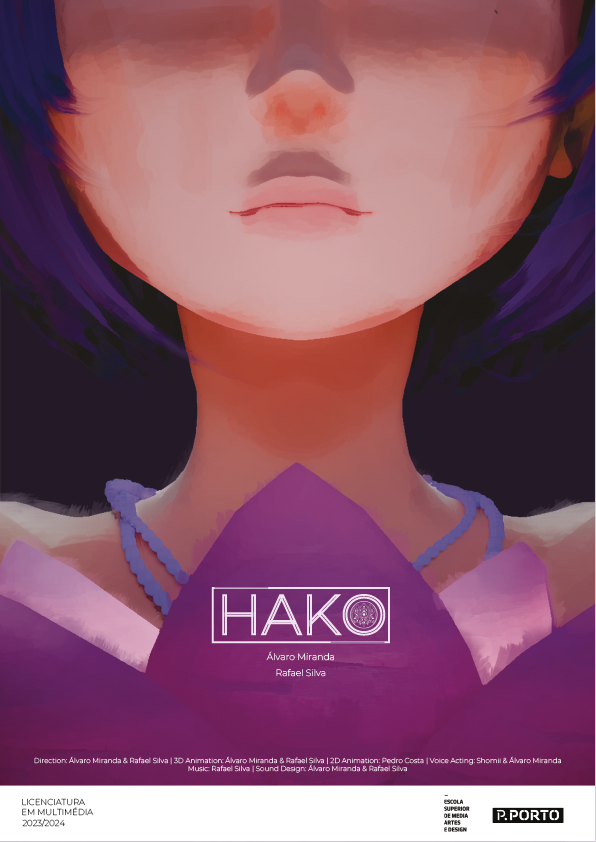

Multimedia Artist | 3D Modeling and Animation
As the final project for the Multimedia Degree at the School of Media Arts and Design of the Polytechnic Institute of Porto (ESMAD P.PORTO), a 3D animation short film was developed.
This animation was created in collaboration with Álvaro Miranda.
This animation participated in two events and was nominated for "Best Animated Film" in one of them.
Exposition in the Bang Awards Animation Festival 2024, Torres Vedras, CAC
Nominated for "Best Animated Film" at the Ymotion Youth Film Festival in Famalicão
The story takes place during one of the routine days of Mei, a young woman tormented by recurring dreams of a mysterious box adorned with a lotus flower. When the box begins to appear in her real life, Mei embarks on a journey of self-discovery to uncover its secrets and confront repressed memories.
The animation was created using the 3D software Blender, employing various methods for character modeling, texturing, and rigging. A visual style was used that allowed working with objects without UV maps, as it utilized world coordinates instead of object coordinates (left figure). For the cel-shading (right figure), a simple node was used to transform the light into one color and the shadow into another, thus maintaining a constant visual distinction between reality and the dream.
In the animation process, two different methods were followed: Keyframe Animation and Motion Capture. Depending on the animation and its demands, these two methods were extensively used, each with its own advantages and disadvantages.
Keyframe Animation: On one hand, it allows for greater control over the animation and its timing; however, it was a more time-consuming process and could result in movements that were less human-like and smooth.
Motion Capture: While it saves time, it requires many corrections and adjustments, which can often be difficult to fix (e.g., walking) and can sometimes result in awkward movements.
The shader process began with the creation of normal maps and hand-painted textures in Krita, which were then applied to the models to enhance detail and color. These maps combined technical extraction with artistic intervention to achieve a more expressive and stylized look.
Example of shader process applied
Afterwards, the maps were integrated into Blender through a custom shader. Several tests were carried out on different objects, ranging from characters to simple props, in order to refine the interaction between textures and lighting until the desired effect was achieved.
Finally, a cel-shading material was developed to unify the project’s aesthetic. This approach reinforced the 2D-like visual identity while ensuring consistency between characters and environments, maintaining a coherent style throughout the animation.
Typography: "Montserrat Light"
